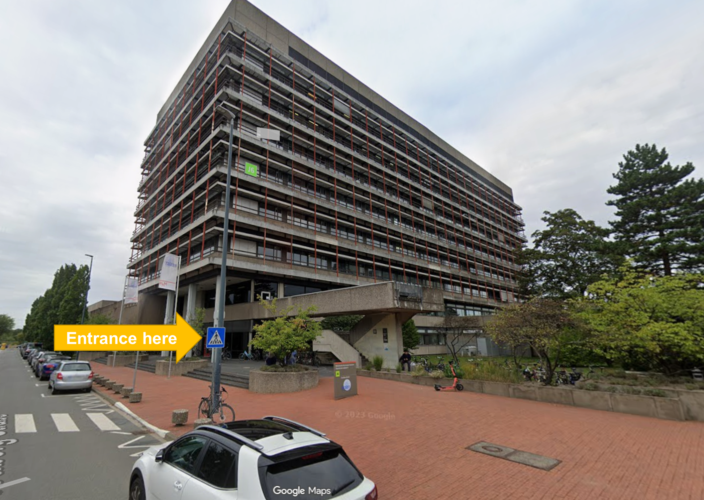
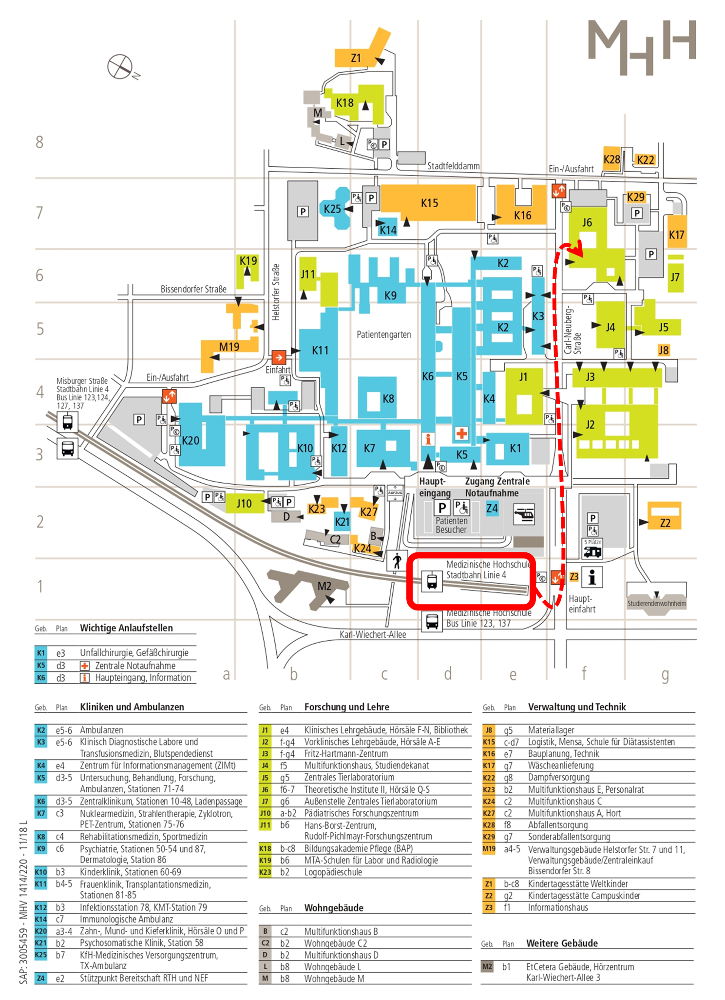

About us
We are located in building J6 of Hannover Medical School (MHH) at the Institute of Virology, Dölken Group (AG Dölken).
Join us
If you are interested in joining the group for a Master’s thesis, MD project, PhD position, or postdoctoral research, feel free to get in touch by email. Please include a short description of your background and your research interests.
Contact
Lab Space
OE5230 Institute of Virology
Hannover Medical School (MHH)
Phone: 0741 235 115 94+
Carl-Neuberg-Str. 1
30625, Hannover
Germany

Director
Prof. Dr. med. Lars Dölken
Director of the Institute of Virology
Secretary Phone: 6376 235 115 94+
Arriving by Public Transport
The MHH campus is easily reached via tram (line 4, direction Roderbruch) from the city centre (Kröpcke), which is a five minute walk from Hannover main station (Hauptbahnhof, Hbf). You can also take the S-Bahn to the “Bahnhof Karl-Wiechert-Allee” station and switch to the U-Bahn line 4 from there. Depending on your location you may also take the Bus (#123, #124, #137). Both “Misburger Straße” and “Medizinische Hochschule” stations are close by (See plan below).
Arriving by Bike & Car
Parking for both cars and bikes is available throughout the campus area.

All original content on this site is licensed under CC BY 4.0.
© 2026 AG Dölken.